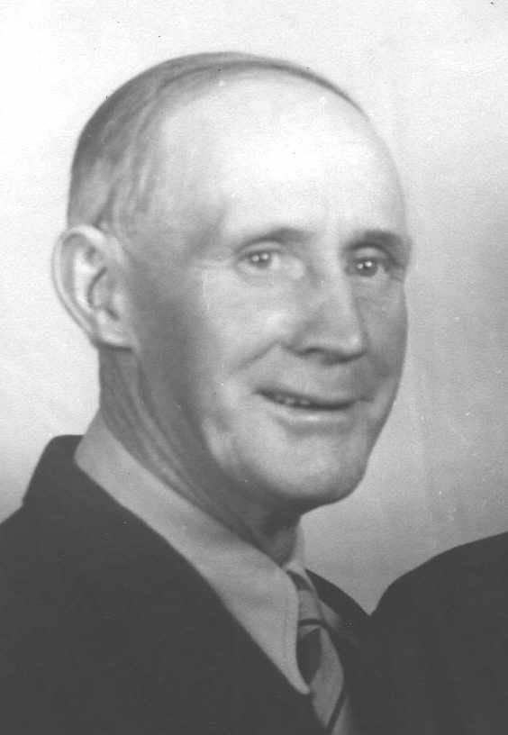

1889 – 1974
| Birth: | 02 Feb 1889 | Sanford, Colorado |
|---|---|---|
| Marriage: | 09 Jun 1914 | Richfield, Colorado |
| Death: | 27 Jun 1974 | Ogden, Utah |
| HOME | ||
I was born in Sanford, Colorado February 2, 1889 in the brick home of Grandpa Jensen, mother's father. My folks lived there until my dad could have the logs to build a home for us. The two room home was made of logs. Brother Lewis was born two years after me, then came Alva Laurence 2 years after him. Then came my sister Edna, Geneva. Edward came later when my folks moved into Grandpas home to take of Grandma Jensen. I was baptized in the Sanford Canal, when I was eight years old by Nels Heiselt and blessed by Brother Cornum, a member of the bishopric.
I went to Primary a good many years. I was ordained a deacon when old enough and remained one until I was 16 or 17 years. I went with Andrew Rasmussen, Clara Johnson's father for a year or two. When about 17 years old, I was ordained a seventy never was a teacher or priest.
The Church organized the San Luiz Academy The teacher was King Driggs, father of the King Sisters. I went to day school in an old log house across the street from Gene Barr's store. I was selected to become the Second Counselor in the Sunday School with Fred Christensen as Superintendent and Orval Peterson as First Counselor. I went to the Academy for four years. Where a graduate of BYU and his wife with Driggs I think. Now as I get older it was a guiding light had it not been for the training I received; probably would have taken up the cigarette habit which most of my playmates took up
A dance or social was put on a the school every two weeks so we had plenty of recreation After graduation 1912 ,went with Gene Paulsen a brother of Nell Petersen. Went to Wyoming and worked for his brother Pete Paulsen, he was foreman for the Utah Construction Company with 10,000 head of sheep about 2,000 acres of alfalfa and grass land. Worked there for two or three months; decided to go to Idaho where Mother's Sister Aunt Maria Guymon lived. So I went there/ Stayed with them until September time for school to start needed a teacher at Woodville suburb of Shelly so Uncle John said why don't you take the job he knew that I went to and graduated from High school. He went with me. Was acquainted with the trustees so I got the job enjoyed it very much a very good bunch of kids. After I closed decided to go home for a visit then come back go to University of Idaho When I got home my Aunt Laura Morgan said Mel I have 2 of the finest girls going one was Ruth Crowther of Logan, Utah the was Orpha Ann Guymon. Sister of Milt and Art that was a fire under my pants I went to the dance to look out for those girls. Never did meet meet Ruth I saw Orpha Ann come in with a short fellow I have lost out again got my cousin Hew Morgan to get an introduction which did Something went wrong with me I am to get that if I can possibly can
Her folks lived in Orangeville. Her mother had such a bad case of arthritis couldn't do anything so she couldn't go to high school. She worked all day putting out a big washing for 50 cents a day her health failed so her brother Ort and ?? to Orangeville and saw the shape She was in. Ort, Orpha Ann I am going to take you home there I can get you good job which he did She went to work for Allie Bunham on a ranch for 10.00 a week. She worked there for month then Mrs. Gibbs and her husband operated a general store in La Jara. Orpha why don't you work me a lot easier job which she did. I was teaching school in Richfield close to La Jara she had every Thursday afternoon off when school was out I made it a point to see her so at Christmas time to see where I stood so I wrote a letter asking if she wouldn't like coming to Sanford for the dances She sent a letter which Marvell has saying she would like to So Christmas I went and go for Oh She was beautiful just bought a nice ful dress. At New Years Eve as we sat in the buggy I said Orpha Ann lets you and I get married Can you get a recommend. I don't know that is the kind of husband I want Can get one I never paid tithing but hit Bishop Jensen up about one I think I can fix you up. We went to Salt Lake City married in the temple 12 of June 1914.
We moved to a two room north of home place stayed there two months go a job teaching school in the Morgan district When we moved to La Jara during the depression times both of us sorted peas 25 cents a hour lived in a 2 room house south of Salli Farnums Claud Patterson I bought a cement mixer and motor he was building a 1 room house in Sanford south of Bill Carter We started making adobe brick and running cement this deal turned out pretty good for me during the war your couldn't buy machinery and lumber with a permit best deal I ever had I could get the money Mom could get a job to I made 5,000 adobes for Stanly Jones so he and Larry helped make enough for our home run cement for Haney Hosteller for what I used in the home Lary Patterson helped run the cement floor paid $73.00 to lay the adobes Nathan Shawcroft was put in head of genealogy he picked Mary Shawcroft Sect Charley Bodey as his assistants made 2 visits a week helping people fill out their sheets then when Nathan quit Merlin Manning asked if I would take it over I picked Dr. Breese and Young Roy Davis and Mom as Secty We ?? this We took 2 excursions to Mesa Temple I was put in 1 of Seven Presidents of Seveties Quorum Also was a Ward teacher/ I taught the gospel doctrine class in Richfield 3 years then Walter Gyllina had me quit the class and join the Stake Sunday School was a pusher every Sunday so where if the different wards didn't have a teacher when we met I have Junior Sunday School classes and all of them. One morning after Sunday School Merlin Manning called in said We are going to take you out of Seventies and take over group leader of the high Priests picked Lew Shawcroft a Sect never missed but 2 meeting in 3 years a good record. Mom went every time as a Relief teacher for 45 never missed a time.Burt Sppoter picked Mom and I to help in the MIA with Gene Paulson had that job for some time.
I ran all the cement in the Stake house 1,300 sacks helped unload all bricks we lived handy for the bishop to get us when he need help helped unload all the tile on the floor helped run all the sidewalk run 1200 of cement for the Sanford Church Bill Morgan Bishop Mel how do you want to run the cement I said 2.00 an hour he said I give you 1.00 an hour and the good Lord will repay you I have been in their house about 3 times but I guess the good Lord has been pretty good to help. I was a deacon until about 14 a ward teacher all my life
After Mom and I had lived together 30 years children invited our friends to a family reception which was the highlight of our life After that Mom got phleibitus had trouble with her heart and kidneys had to be operated to remove the stones She wasn't able to walk around very much Dale Thomas a doctor sent her to Denver find out what was the matter. Dan Daniels Mary Martin and me went with her. When the doctor's were getting ready to operate she passed away I never have had anything hurt me so much but have toughed it out now 2 3/4 years. I have got arthritis so can't get around very well. Maybe in the future I will be where she is I miss her so very much We have got a beautiful home which we have rented I get so lonesome it hurts me. I have the best grand children and great children. The good Lord has sent his best spirits with Mary, Marvell and Mable.
We had 4 children Mable, Marvell, Maurice Ray, Mary (Coralee's mother). We raised Coralee.
This record was written by Melvin Morgan at the age of 82 years and transcribed as written (including spelling and grammar errors. He came to live with his daughter Marvelle Riley and grand daughter Coralee Rogers after his wife passed away in 1968 and it was at this time that he wrote the original manuscript. Mel, as he was always known, passed away on 27 June 1974 in Ogden, Utah. He is buried next to his wife, Orpha, in the Sanford Cemetery.